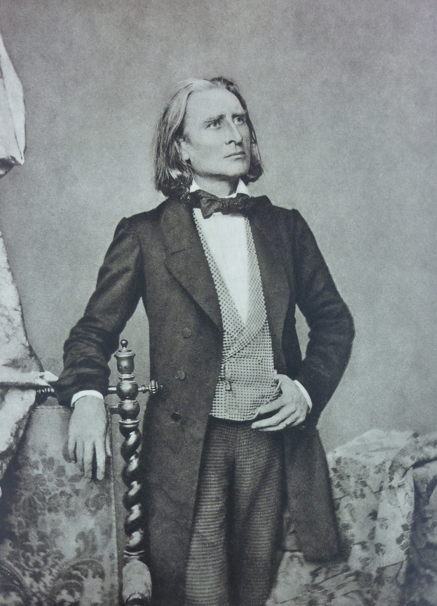

Franz Liszt
Born in 1811, Liszt was a Hungarian composer who participated in the world of music in many ways; he was also a conductor, teacher, arranger, and performer. Liszt is often regarded as the greatest pianist to have ever lived. His unparalleled technique is apparent upon examination of many of his pieces, which are extremely difficult to play. Liszt died of pneumonia at the age of 74.
| Links To My Favorite Compositions | |
| La Campanella | Hungarian Rhapsody No. 2 |
| Un Sospiro | Liebestraum No. 3 |